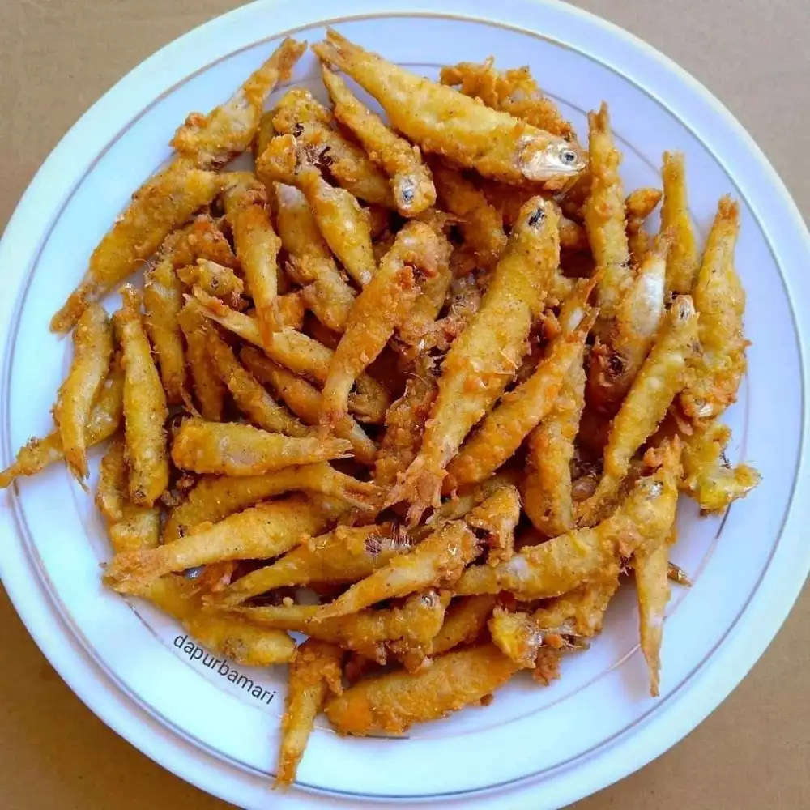

Ikan teri goreng tepung

Bahan-bahan
- 250 gram ikan teri segar
- 150 gram tepung instan
Cara membuat
- Cuci bersih ikan teri, bilas sebanyak 3 kali, kemudian tiriskan.
- Siapkan baskom, taruh ikan teri di dalam baskom kemudian tuang sedikit demi sedikit tepung instan lalu aduk rata, diamkan 5 menit, setelah terserap beri tepung lagi aduk kembali sampai habis.
- Setelah terserap sempurna sampai tidak ada butir tepung kering dan tanpa menambahkan air, goreng ikan dalam minyak panas dengan api kecil hingga matang dan kering.
- Sajikan